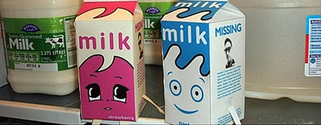

天夏娘说： 有得听 有得看 有得玩 有意思。象下面这个……

Milky 出现在BLUR的MV——coffee & TV 里，MV主要讲的是：Blur的吉他手graham coxon玩音乐久不归家，父母和妹妹内心非常想念着急，Milky为了让家人心情好起来，决定自己出去寻找graham coxon。过程中路途凶险，Milky还目睹了美丽的女版Milky被人踩扁的惨象。最终Milky勇敢地找到了graham coxon，graham coxon看见Milky想起了家中的亲人，于是在凌晨前赶回了家。在家门口把Milky一口气喝光。Milky终于在天堂见到了之前的女版Milky。 Milky形象简单可爱，于是有人搞了A4打印版的纸模型，方便大家下载回去制作自己的Milky，各位喜欢的话可以点击底下两张小图下载打印版的图片回家试试。MV中可爱的女版Milky被踩扁了，自己打印出来折一对milky放在家里让他们终成眷属吧。